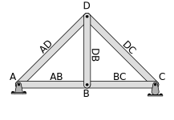
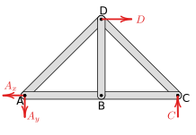
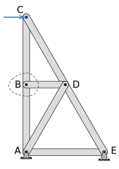
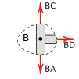
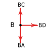
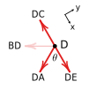
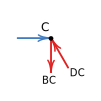
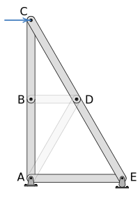
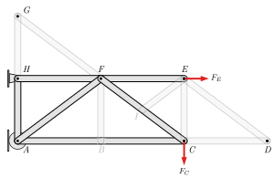

What are simple trusses and how do they differ from other structural systems?
What are the benefits and dangers of simple trusses?
How can we determine the forces acting within simple truss systems?
For a truss in equilibrium, why is every individual member, joint, and section cut from the truss also in equilibrium?
How do we identify zero-force members in a truss and use their presence to simplify the analysis?
Subsection6.3.1Introduction
A truss is a rigid engineering structure made up of long, slender members connected at their ends. Trusses are commonly used to span large distances with a strong, lightweight structure. Some familiar applications of trusses are bridges, roof structures, and pylons. Planar trusses are two-dimension trusses built out of triangular subunits, while space trusses are three-dimensional, and the basic unit is a tetrahedron.
In this section we will analyze a simplified approximation of a planar truss, called a simple truss and determine the forces the members individually support when the truss supports a load. Two different approaches will be presented: the method of sections, and the method of joints.
Subsection6.3.2Simple Trusses
Truss members are connected to each other rigidly, by welding or joining the ends with a gusset plate. This makes the connecting joints rigid, but also make the truss difficult to analyze. To reduce the mathematical complexity in this text we will only consider simple trusses, which are a simplification appropriate for preliminary analysis.
Figure6.3.1.Truss with riveted gusset plates.
Simple trusses are made of all two-force members and all joints are modeled as frictionless pins. All applied and reaction forces are applied only to these joints. Simple trusses, by their nature, are statically determinate, having a sufficient number of equations to solve for all unknowns values. While the members of real-life trusses stretch and compress under load, we will continue to assume that all bodies we encounter are rigid.
Simple trusses are made of triangles, which makes them rigid when removed from supports. Simple trusses are determinate, having a balance of equations and unknowns, following the equation:
\begin{equation*}
\underbrace{2\times (\text{number of joints})}_{\text{system equations}} = \underbrace{(\text{number of reaction forces}) + (\text{number of members})}_{\text{system unknowns}}
\end{equation*}
Commonly, rigid trusses have only three reaction forces, resulting in the equation:
\begin{equation*}
2\times (\text{number of joints})=3 + (\text{number of members})
\end{equation*}
Unstable trusses lack the structural members to maintain their rigidity when removed from their supports. They can also be recognized using the equation above having more system equations on the left side of the equation above then system unknowns on the right.
Truss systems with redundant members have fewer system equations on the left side of the equation above than the system unknowns on the right. While they are indeterminate in statics, in later courses you will learn to solve these trusses too, by taking into account the deformations of the truss members.
Simple trusses have no structural redundancy, which makes them easy to solve using the techniques of this chapter, however this simplicity also has a dark side.
These trusses are sometimes called fracture critical trusses because the failure of a single component can lead to catastrophic failure of the entire structure. With no redundancy, there is no alternative load path for the forces that normally would be supported by that member. You can visualize the fracture critical nature of simple trusses by thinking about a triangle with pinned corners. If one side of a triangle fails, the other two sides lose their support and will collapse. In a full truss made of only triangles, the collapse of one triangle starts a chain reaction which causes others to collapse as well.
While fracture critical bridges are being replaced by more robust designs, there are still thousands in service across the United States. To read more about two specific fracture critical collapses search the internet for the Silver Bridge collapse, or the I-5 Skagit River Bridge collapse.
Subsection6.3.3Solving Trusses
“Solving” a truss means identifying and determining the unknown forces carried by the members of the truss when supporting the assumed load. Because trusses contains only two-force members, these internal forces are all purely axial. Internal forces in frames and machines will additionally include traverse forces and bending moments, as you will see in Chapter 8.
Determining the internal forces is only the first step of a thorough analysis of a truss structure. Later steps would include refining the initial analysis by considering other load conditions, accounting for the weight of the members, relaxing the requirement that the members be connected with frictionless pins, and ultimately determining the stresses in the structural members and the dimensions required in order to prevent failure.
Two strategies to solve trusses will be covered in the following sections: the Method of Joints and the Method of Sections. Either method may be used, but the Method of Joints is usually easier when finding the forces in all the members, while the Method of Sections is a more efficient way to solve for specific members without solving the entire truss. It’s also possible to mix and match methods.
The initial steps to solve a truss are the same for both methods. First, ensure that the structure can be modeled as a simple truss, then draw and label a sketch of the entire truss. Each joint should be labeled with a letter, and the members will be identified by their endpoints, so member \(AB\) is the member between joints \(A\) and \(B\text{.}\) This will help you keep everything organized and consistent in later analysis. Then, treat the entire truss as a rigid body and solve for the external reactions using the methods of Chapter 5. If the truss is cantilevered and unsupported at one end you may not actually need the reaction forces and may skip this step. The reaction forces can be used later to check your work.
Figure6.3.4.Truss Labels.
Figure6.3.5.Free body diagram.
Subsection6.3.4Zero-Force Members
Sometimes a truss will contain one or more zero-force members. As the name implies, zero-force members carry no force and thus support no load. Zero-force members will be found when you apply equilibrium equations to the joints, but you can save some work if you can spot and eliminate them before you begin. Fortunately, zero-force members can easily be identified by inspection with two rules.
Rule 1: If two non-collinear members meet at an unloaded joint, then both are zero-force members.
Rule 2: If three forces (interaction, reaction, or applied forces) meet at a joint and two are collinear, then the third is a zero-force member.

Consider the truss to the left. Assume that the dimensions, angles and the magnitude of force \(C\) are given. At joint \(B\text{,}\) there are two vertical collinear members as well as a third member which is horizontal, so Rule 2 should apply.
What does Rule 2 say about member \(BD\text{?}\) Can it tell us anything about member \(DA\text{?}\)
Cutting the members at the dotted boundary line exposes internal forces \(BC\text{,}\)\(BD\) and \(BA\text{.}\) These forces act along the axis of the corresponding members by the nature of two-force members, and for convenience have been assumed in tension although that may turn out to be incorrect.
Rule 2 applies here since \(BA\) and \(BC\) are collinear and \(BD\) is not.

The free-body diagram of joint \(B\) may be drawn by eliminating the cut members and only showing the forces themselves.
The situation is simple enough to apply the equilibrium equations in your head.

Vertically, forces \(BC\) and \(BA\) must be equal, and horizontally, force \(BD\) must be zero to satisfy \(\Sigma F_x = 0\text{.}\) We learn that member \(BD\) is a zero-force member.
While it is probably easiest to think about Rule 2 when the third member is perpendicular to the collinear pair, it doesn’t have to be. Any perpendicular component must be zero which implies that the corresponding member is zero-force.
Finding zero-force members is an iterative process. If you determine that a member is zero-force, eliminate it and you may find others. Continuing the analysis at joint \(D\) draw its free-body diagram. Keep in mind that if one end of a member is zero-force the whole member is zero-force. Since member \(BD\) is zero-force, horizontal force \(BD\) acting on joint \(D\) is zero and need not be included on the free-body diagram, and the remaining three forces match the conditions to apply Rule 2.

Analyzing the joint as before, but with a coordinate system aligned with the collinear pair,
This equation will be satisfied if \(DA = 0\) or if \(\sin \theta = 0\) but the second condition is only true when \(\theta = \ang{0}\) or \(\theta =\ang{180}\text{,}\) which is not the case here. Therefore, force \(DA\) must be zero, and we can conclude that member \(DA\) is a zero-force member as well.
Finally consider joint \(C\) and draw its free-body diagram. Does either Rule apply to this joint? No. You will need to solve two equilibrium equations with this free-body diagram to find the magnitudes of forces \(CD\) and \(CB\text{.}\)
On the other hand, if the horizontal load \(C\) was not present or if either \(BC\) or \(DC\) was zero-force, then Rule 1 would apply and the remaining members would also be zero-force.


The final truss after eliminating the zero-force members is shown to the left. Forces \(BC=BA\) and \(DC = DE\) and the members may be replaced with longer members \(AC\) and \(CE\text{.}\)
The original truss has been reduced to a simpler triangular structure with only three internal forces to be found. Once you are able to spot zero force members, this simplification can be made without drawing any diagrams or performing any calculations.
You may be wondering what is the point of including a member in a truss if it supports no load. In our simplified example problems, they really are unnecessary, but in the real world, zero-force members are important for several reasons:
We have assumed that all members have negligible weight or if not, applied half the weight to each pin. The actual weight of real members invalidates the two-force body assumption and leads to errors. Consider a vertical member -- the internal forces must at least support the member’s weight.
Truss members are not actually rigid, and long slender members under compression will buckle and collapse. The so-called zero-force member will be engaged to prevent this buckling. In the previous example, members CD and DE are under compression and form an unstable equilibrium and would definitely buckle at pin \(D\) if they were not replaced with a single member \(CE\) with sufficient rigidity.
Trusses are often used over a wide array of loading conditions. While a member may be zero-force for one loading condition, it will likely be engaged under a different condition — think about how the load on a bridge shifts as a heavy truck drives across.
So finding a zero-force member in a determinate truss does not mean you can discard the member. Zero-force members can be thought of as removed from the analysis, but only for the loading you are currently analyzing. After removing zero-force members, you are left with the simplest truss which connects the reaction and applied forces with triangles. If you misinterpret the rules you may over-eliminate members and be left with missing legs of triangles or ‘floating’ forces that have no load path to the foundation.
Example6.3.7.Zero-Force Member Example.
Given the truss shown, eliminate all the zero-force members, and draw the remaining truss.
Due to two members meeting at unloaded joint \(G\text{,}\) both members \(GH\) and \(FG\) are zero-force members
Due to two members meeting at unloaded joint \(D\text{,}\) both members \(DE\) and \(CD\) are zero-force members
Rule 2:
Due to three forces meeting at joining \(B\text{,}\) with two being collinear (internal forces in \(AB\) and \(BC\)) then \(BF\) is a zero-force member.
Due to three forces meeting at joint \(I\text{,}\) with two being collinear (internal forces \(IF\) and \(CI\)), then \(EI\) is a zero-force member. Note that member \(EI\) does not need to be perpendicular to the collinear members to be a zero force.
The remaining truss is shown. Note that once \(EI\) and \(BF\) are eliminated, you can effectively eliminate the joints \(B\) and \(I\) as the member forces in the collinear members will be equal. Also notice that the truss is still formed of triangles which fully support all of the applied forces.

Try to find all the zero-force members in the truss in the interactive diagram below, once you believe you have found all of them, check out the step-by-step solution in the interactive.